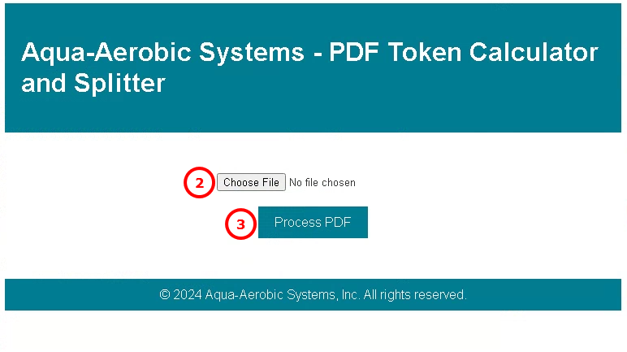
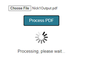

PDF Token Calculator and Splitter
This tool is used to break up large PDFs (with bookmarks) into smaller ones to manage the token size when uploading into Poe.
- Go to http://192.168.1.161:5000
- Click Choose File button and select large PDF of your choice (PDF must have bookmarks)
- Click Process PDF

- PLEASE WAIT WHILE YOUR PDF PROCESSES
- Large PDFs can take a few minutes, especially if you are on the VPN.
- 
- Once processing is complete, you will get a total document token count.
- Click Download ZIP (If there are no bookmarks in the input PDF, the Download ZIP button will not function)
Created with the Personal Edition of HelpNDoc: Free Qt Help documentation generator